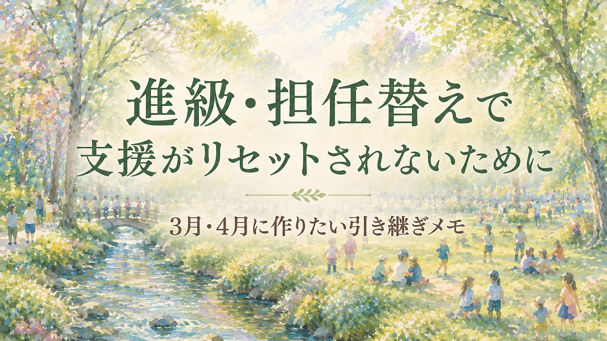

今年の担任の先生は、子どものことをよく分かってくれていた。声のかけ方も、宿題の調整も、苦手な場面への配慮も、少しずつ整ってきた。
でも、春になると担任が変わります。
また一から説明しなければならない。今年うまくいった支援が、来年も続くか分からない。新しい先生に、どこまで伝わるだろうか。子どもがまた不安定にならないだろうか。
進級や担任替えの時期に、こうした不安を感じる保護者は少なくありません。
特別支援教育では、子どもに合った支援を積み重ねていくことが大切です。ところが、担任が変わるたびに支援の手立てが変わってしまうと、子どもも保護者も疲れてしまいます。
支援は、毎年ゼロから作り直すものではありません。
今年うまくいったこと。うまくいかなかったこと。子どもが安心しやすい声かけ。苦手な場面。家庭で見えているサイン。そうした情報を、次の先生へつなぐことが大切です。
この記事では、進級・担任替えで支援がリセットされないために、保護者が3月・4月に作っておきたい「引き継ぎメモ」について整理します。
ご注意：この記事は診断や学校判断の代替をするものではありません。家庭で見えている姿や、これまで効果のあった支援を、学校と共有するための材料として整理することを目的にしています。
この記事で考えたいこと
進級や担任替えで大切なのは、子どもの困りごとをもう一度すべて説明し直すことではありません。今年うまくいった支援、本人が安心しやすい関わり方、負荷が大きかった場面を整理し、次の先生と共有することです。
引き継ぎメモは、学校を責めるための文書ではなく、子どもが新しい一年を始めやすくするための共有資料です。
支援が「リセットされた」と感じるのはなぜか
進級や担任替えのあと、保護者がこう感じることがあります。
- 去年は分かってもらえていたのに
- また同じ説明をしている
- 前の先生には伝わっていた配慮がなくなった
- 子どもが新学期から不安定になった
これは、必ずしも新しい先生が悪いという話ではありません。新担任は、新しいクラス、新しい子どもたち、新しい学年の仕事を同時に抱えています。前年度の細かな関わり方や、家庭で見えていた困り感まで、最初からすべて把握するのは簡単ではありません。
だからこそ、支援は担任個人の記憶や経験だけに頼らず、学校内で引き継がれる形にしておくことが大切です。
特に、次のような情報は、引き継がれにくいことがあります。
- 子どもが安心しやすい声かけ
- 避けた方がよい言い方
- 宿題で崩れやすい場面
- 行事後に家庭で疲れが出ること
- 服や音など感覚面のつらさ
- 友達関係で無理をしやすいこと
- 本人が困ったときのサイン
- 家庭で試して効果があった対応
こうした情報は、成績表や出席状況だけでは見えません。だから、保護者が整理して伝える意味があります。
引き継ぎメモは「お願い文」ではなく「共有資料」
保護者の中には、学校にメモを渡すことに遠慮を感じる方もいます。
- 細かい親だと思われないだろうか
- 先生に負担をかけるのでは
- 要求ばかりに見えないだろうか
そう心配になるのは自然です。ただ、引き継ぎメモは、学校に一方的な要求をするためのものではありません。子どもが新しい環境に入りやすくなるよう、これまで分かっている情報を共有するためのものです。
書き方として大切なのは、「こうしてください」と並べることではありません。どの場面で困りやすいのか。どのような声かけで動きやすいのか。どの支援が効果的だったのか。どの対応では、かえって崩れやすかったのか。これを、できるだけ具体的に書くことです。
「うちの子を特別扱いしてください」ではなく、
「学校生活に参加しやすくするために、これまで分かっていることを共有します」
という位置づけにすると、学校とも話し合いやすくなります。
合理的配慮として学校に相談できることについては、合理的配慮ってどう頼む？学校への上手な申請方法でも整理しています。
引き継ぎメモに入れたい内容
引き継ぎメモは、長く書きすぎる必要はありません。むしろ、最初は1枚に収まるくらいが学校側にも読みやすいです。入れたい内容は、次の6つです。
1. 子どもの強み・好きなこと
困りごとだけを書くと、子どもが「配慮が必要な子」としてだけ見られやすくなります。最初に、強みや好きなことも書いておくとよいです。
- 好きな活動
- 得意な教科や作業
- 安心しやすい人との関わり方
- 集中しやすい場面
- 本人のよさが出やすい活動
これは、子どもを前向きに理解してもらうために大切です。
2. 困りやすい場面
次に、困りやすい場面を書きます。ただし、「困った子です」と見える書き方ではなく、場面で整理します。
- 予定変更があると不安が強くなる
- 大きな音があると耳をふさぐ
- 宿題の書く量が多いと家庭で大きく崩れる
- 行事後に数日疲れが残る
- 友達に急に話しかけられると固まりやすい
- 朝の支度で服の感触が合わないと登校前に荒れやすい
感覚面のつらさがある場合は、感覚過敏のある子の学校生活も参考になります。
3. 効果のあった支援
引き継ぎで一番大切なのは、「何に困るか」だけではありません。何をすると参加しやすくなるかです。
- 予定を先に伝えると落ち着きやすい
- 一度に言う指示を少なくすると動きやすい
- 板書を写す量を減らすと授業に参加しやすい
- 宿題を小分けにすると取りかかりやすい
- 行事では出入口近くにいると安心しやすい
- 困ったときの合図を決めておくと相談しやすい
宿題で大きく崩れる場合は、宿題で毎日荒れる子も参考になります。
4. 避けたい声かけ・対応
子どもによっては、よかれと思った声かけで、かえって崩れることがあります。それも引き継げるとよいです。
- みんなの前で急に注意されると固まりやすい
- 「早く」と繰り返されると焦って動けなくなる
- 理由を聞かれ続けると黙り込む
- 失敗をすぐ指摘されると挑戦しにくくなる
- 予定変更を直前に知らされると不安が強くなる
これは先生を制限するためではありません。子どもが落ち着きやすい関わり方を共有するための情報です。
5. 家庭で出るサイン
学校では見えにくく、家庭で出るサインもあります。
- 帰宅後に泣く
- 宿題前に固まる
- 行事後に数日不安定になる
- 朝に腹痛や頭痛を訴える
- 夜に翌日の学校の不安を話す
- きょうだいに強く当たる
学校で大きなトラブルがなくても、家庭で強い反動が出ている場合があります。家庭で大きく荒れる背景については、「学校では大丈夫」なのに家で荒れる子でも整理しています。
6. 関係している支援先
必要に応じて、関係している支援先も整理しておきます。
- 通級指導教室
- 放課後等デイサービス
- 相談支援専門員
- 医療機関
- スクールカウンセラー
- 自治体の相談窓口
ただし、詳しい個人情報を必要以上に書く必要はありません。共有する範囲は、本人・保護者の同意や学校との相談を大切にしてください。
引き継ぎメモの書き方
引き継ぎメモを書くときは、診断名や困りごとだけで終わらせないことが大切です。書き方の基本は、次の形です。
「困っています」だけではなく、「どの場面で、どのように困るのか」
「配慮してください」だけではなく、「どんな条件があると参加しやすいのか」
「できません」だけではなく、「どこまでならできるのか」
「やめてください」だけではなく、「こういう関わり方だと落ち着きやすい」
この形で書くと、学校側も支援を考えやすくなります。
学校で個別の教育支援計画や個別の指導計画が作成されている場合、引き継ぎメモはそれらに置き換わるものではありません。家庭で見えている姿や、保護者が伝えたい要点を補う資料として考えると使いやすくなります。
3月にしておきたいこと
3月は、今年うまくいった支援を整理する時期です。できれば、年度末の面談や連絡の機会に、今年の担任の先生と確認できるとよいです。
- 今年うまくいった支援は何か
- 子どもが安心して過ごせた場面はどこか
- 逆に負荷が大きかった場面は何か
- 来年度も続けたい配慮は何か
- 次の先生に伝えておきたいことは何か
この時期に整理しておくと、4月に慌てずにすみます。特に、行事、宿題、感覚面、友達関係、登校しぶりなどは、春先に不安定になりやすいことがあります。
年度末に「来年度も同じようにお願いします」とだけ伝えるより、何が効果的だったのかを具体的に残しておく方が引き継ぎやすくなります。
4月にしておきたいこと
4月は、新しい先生と関係を作る時期です。最初からすべてを完璧に伝えようとしなくて大丈夫です。まずは、最も大切なことを短く共有します。
- 新年度に不安定になりやすいこと
- 最初に知っておいてほしい支援
- 家庭で出やすいサイン
- 困ったときの連絡方法
- 本人が安心しやすい関わり方
4月の学校は忙しい時期です。だからこそ、長い説明よりも、1枚の短いメモが役立つことがあります。
「昨年度うまくいった支援と、家庭で見えているサインを簡単にまとめました。すべてこの通りにしてほしいというより、先生と一緒に今年の支援を考える材料にできればと思っています。」
この言い方なら、学校への要求ではなく、共有のための資料として受け取られやすくなります。
5月に一度、見直す
4月に伝えた支援が、そのままうまくいくとは限りません。新しい担任、新しい友達、新しい教室、新しい時間割。環境が変わると、子どもの様子も変わります。
だから、5月ごろに一度見直すことも大切です。
- 新しい環境で落ち着いているか
- 家庭で疲れや不安が増えていないか
- 去年の支援が今年も合っているか
- 新しく困っている場面はないか
- 先生と共有した方がよいことはないか
支援は、一度決めたら終わりではありません。子どもの様子を見ながら、少しずつ調整していくものです。
引き継ぎメモ例
1. 子どもの強み・好きなこと
- 理科の観察や図鑑を見ることが好き
- 少人数だと自分の考えを話しやすい
- 予定が分かっていると安心して動ける
2. 困りやすい場面
- 予定変更が急だと不安が強くなる
- 大きな音や人混みのあとに疲れやすい
- 宿題の書く量が多いと家庭で崩れやすい
3. 効果のあった支援
- 予定を先に伝えると落ち着きやすい
- 指示を一つずつ伝えると動きやすい
- 宿題を小分けにすると取りかかりやすい
- 困ったときに合図で伝えられると安心する
4. 避けたい対応
- みんなの前で急に注意されると固まりやすい
- 「早く」と繰り返されると焦って動けなくなる
- 理由を聞かれ続けると黙り込む
5. 家庭で見えているサイン
- 行事や発表の前に夜眠れなくなる
- 学校で頑張った日は、帰宅後に泣いたり怒ったりしやすい
- 宿題の前に固まることがある
誰に共有するか
引き継ぎメモは、担任の先生だけに渡せばよいとは限りません。子どもの状況によっては、次のような人と共有できる場合があります。
- 新しい担任
- 学年主任
- 特別支援教育コーディネーター
- 通級担当
- 養護教諭
- スクールカウンセラー
- 放課後等デイサービス
- 相談支援専門員
ただし、共有範囲は慎重に考える必要があります。すべての情報を、すべての人に伝えればよいわけではありません。本人や保護者の同意、個人情報の扱い、学校の体制を確認しながら進めることが大切です。
特に、医療情報や家庭内の詳しい事情は、必要な範囲にとどめて共有するのが基本です。
相談してよい目安
次のような状態がある場合は、進級前後に早めに学校へ相談してよいと思います。
- 担任が変わるたびに大きく不安定になる
- 新学期になると登校しぶりが出る
- 前年度の配慮がなくなると家庭で大きく崩れる
- 宿題や行事、感覚面の配慮が必要
- 家庭でのサインが学校に伝わりにくい
- 保護者が毎年同じ説明をすることに疲れている
- 学校と何を共有すればよいか分からない
- 支援級・通級・通常学級の間で情報共有が必要
- 放課後等デイサービスや相談支援とも連携したい
「これくらいで相談していいのだろうか」と迷う必要はありません。新年度の不安が大きいなら、早めに情報を整理しておくことが支援につながります。
最後に――支援は、次の先生へつないでよい
進級や担任替えは、子どもにとって大きな変化です。新しい先生。新しい教室。新しい友達。新しい時間割。新しい行事。それだけで、子どもによっては大きな負荷になります。
だからこそ、これまで積み重ねてきた支援を、次につないでよいのです。保護者が毎年、一からすべて説明し直す必要はありません。
今年うまくいったことを、来年度につなぐ。家庭で見えているサインを、学校と共有する。子どもが安心しやすい条件を、新しい先生と一緒に考える。
それは、わがままでも過保護でもありません。子どもが新しい一年を始めやすくするための、大切な準備です。
支援は、リセットしなくてよい。
積み重ねてきたものを、次の先生へつないでいけばよいのです。
相談前に整理したい方へ
進級や担任替えの前後は、家庭で見えている困り感や、これまで効果のあった支援を整理しておくことが大切です。まなびの森教育研究所では、診断や治療ではなく、学校や関係機関と話し合うための材料づくりを大切にしています。
新担任に何を伝えればよいか分からない、毎年同じ説明をすることに疲れている、引き継ぎメモを一緒に整理したい。そうしたときは、相談前のメモづくりから一緒に整理できます。
保護者向け相談ページを見る